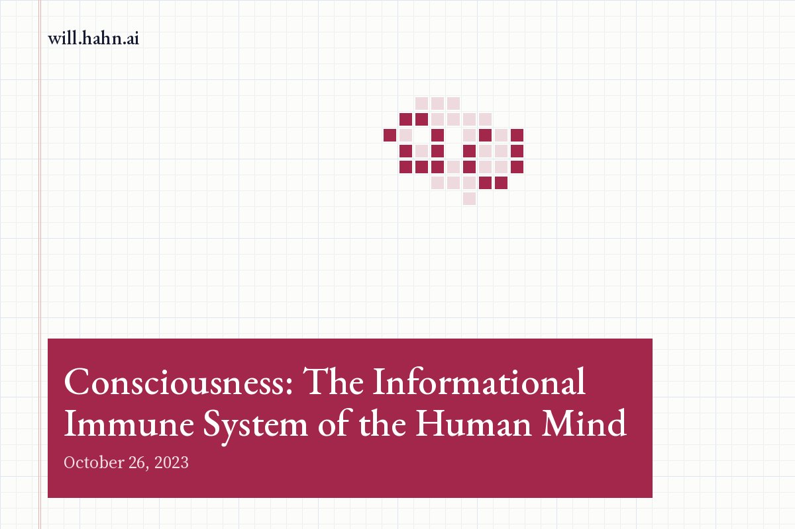

Consciousness: The Informational Immune System of the Human Mind

Consciousness has long been one of humanity's greatest enigmas. The subject of countless philosophical debates and scientific inquiries, consciousness is a complex interplay of perception, memory, emotion, and thought. However, a new understanding of consciousness has begun to take shape, suggesting that it functions similarly to an informational immune system. In essence, our consciousness is proposed to filter reality into a simplified version, a Goldilocks Principle of sorts, to protect the stability of our ego's control system, our dynamical system software.
The Goldilocks Principle in Psychology
The Goldilocks principle, originating from the children's story where Goldilocks prefers her porridge 'not too hot, not too cold, but just right,' has found relevance in several scientific fields, including psychology. Essentially, this principle suggests that the human mind tends to prefer things in moderation - not too complex or too simple, but just right. It's a balancing act that our minds perform in perceiving and processing information.
Consciousness as an Informational Immune System
So how does this relate to consciousness? Think of consciousness as an advanced processing unit that takes in an incredible amount of data from the world around us. It's continuously bombarded by stimuli, ranging from the temperature on our skin to the perception of colors and sounds. To prevent us from being overwhelmed by this deluge of information, our consciousness performs a critical role, acting as an immune system of sorts.
Just like our biological immune system, which fights off harmful viruses and bacteria to protect our physical health, our consciousness filters out unnecessary or potentially harmful information. It simplifies reality into manageable bites, allowing us to function without being overwhelmed. By removing the 'noise' and keeping only the 'signal,' our consciousness ensures that the information we process is 'just right.'
The Ego's Control System: Dynamical System Software
The ego, often considered as our 'self' or identity, can be thought of as our dynamical system control software. It governs our actions, feelings, and thoughts, creating a coherent narrative of who we are and what our purpose is. Stability is essential for this system, as too much instability could lead to an identity crisis or a breakdown of the ego's control system.
By filtering and simplifying reality, consciousness plays a protective role, ensuring that the ego's control system maintains its stability. Just as the Goldilocks Principle suggests, it's about finding the 'just right' level of information - enough to keep us informed and responsive, but not so much that we're overwhelmed and destabilized.
The Balance of Consciousness
This understanding of consciousness as an informational immune system that filters and simplifies reality provides a fresh perspective on the human mind's complexity. It suggests that the balancing act our consciousness performs is essential not only for our perception of the world but also for maintaining our psychological stability.
However, it's crucial to remember that this balance isn't always perfect. Sometimes, our consciousness may filter out too much, leading to ignorance or apathy. At other times, it may not filter enough, causing information overload and anxiety. Understanding how our consciousness functions can help us better manage these imbalances and strive towards a 'just right' level of information processing.
In the end, the complex labyrinth of consciousness is a testament to the human mind's extraordinary capabilities. While the mystery of consciousness remains far from fully solved, this concept of an informational immune system adds another fascinating layer to our understanding. After all, our consciousness isn't just about perceiving reality - it's about protecting us, too.
The Goldilocks Principle in Psychology
The Goldilocks principle, originating from the children's story where Goldilocks prefers her porridge 'not too hot, not too cold, but just right,' has found relevance in several scientific fields, including psychology. Essentially, this principle suggests that the human mind tends to prefer things in moderation - not too complex or too simple, but just right. It's a balancing act that our minds perform in perceiving and processing information.
Consciousness as an Informational Immune System
So how does this relate to consciousness? Think of consciousness as an advanced processing unit that takes in an incredible amount of data from the world around us. It's continuously bombarded by stimuli, ranging from the temperature on our skin to the perception of colors and sounds. To prevent us from being overwhelmed by this deluge of information, our consciousness performs a critical role, acting as an immune system of sorts.
Just like our biological immune system, which fights off harmful viruses and bacteria to protect our physical health, our consciousness filters out unnecessary or potentially harmful information. It simplifies reality into manageable bites, allowing us to function without being overwhelmed. By removing the 'noise' and keeping only the 'signal,' our consciousness ensures that the information we process is 'just right.'
The Ego's Control System: Dynamical System Software
The ego, often considered as our 'self' or identity, can be thought of as our dynamical system control software. It governs our actions, feelings, and thoughts, creating a coherent narrative of who we are and what our purpose is. Stability is essential for this system, as too much instability could lead to an identity crisis or a breakdown of the ego's control system.
By filtering and simplifying reality, consciousness plays a protective role, ensuring that the ego's control system maintains its stability. Just as the Goldilocks Principle suggests, it's about finding the 'just right' level of information - enough to keep us informed and responsive, but not so much that we're overwhelmed and destabilized.
The Balance of Consciousness
This understanding of consciousness as an informational immune system that filters and simplifies reality provides a fresh perspective on the human mind's complexity. It suggests that the balancing act our consciousness performs is essential not only for our perception of the world but also for maintaining our psychological stability.
However, it's crucial to remember that this balance isn't always perfect. Sometimes, our consciousness may filter out too much, leading to ignorance or apathy. At other times, it may not filter enough, causing information overload and anxiety. Understanding how our consciousness functions can help us better manage these imbalances and strive towards a 'just right' level of information processing.
In the end, the complex labyrinth of consciousness is a testament to the human mind's extraordinary capabilities. While the mystery of consciousness remains far from fully solved, this concept of an informational immune system adds another fascinating layer to our understanding. After all, our consciousness isn't just about perceiving reality - it's about protecting us, too.
New essays also go out by email. Subscribe on Substack.